Persona 3 \\ FES \\ Portable
What's The Difference?
Persona 3 FES is an enhanced re-release of Persona 3 for the PlayStation 2. It contains an estimated 30 additional hours of gameplay over the original Persona 3, most of which comes in the form of an epilogue called "The Answer", also known as "Episode Aegis" in the Japanese version. The game was rereleased as a downloadable game on the PSN for the PS3 in 2012, but only in North America and Europe.
Persona 3 Portable is a port of Persona 3, released for the PlayStation Portable. It can also be played on PlayStation Vita / PlayStation TV via the PlayStation Store through backwards compatibility.
Persona 3 was the first game in the series to add a social system to the mechanics, known as "Social Links". Each Social Link represents a single Arcana, and raising a particular Social Link increases the experience bonus the protagonistsreceive when they fuse Personas of that Arcana. By completing a Social Link, it unlocks the ultimate Persona of that Arcana. Social Links can, however, be reversed if players do not spend time with the respective people holding the Link, end up booking two holiday invitations on one day, or gave an improper answer during their conversations. The reverse effect will also continue to last until the protagonist reconciles with them. At some point a Social Link can even be broken, prohibiting the protagonist from fusing Personas from the respective Arcana. This system was replaced in Persona 5 with the Confidant system.
The Most Notable Differences Are:
FES:
- The number of Personas in the game has increased.
- Secret videos of the protagonist's dorm mates have been added to flesh them out.
- Koromaru can now be taken on walks.
- Several of the Social Links have been modified slightly, such as Tanaka being available at a different time.
- Several new Quests have been added.
- New costumes can be worn in battle.
- A new event involving Chidori Yoshino was added.
- Naganaki Shrine was completely overhauled.
- A hard mode was added.
- A new epilogue known as "The Answer" or "Episode Aegis" in japan, was added.
Portable:
- The player can now choose the gender of the protagonist
- Should the player choose the female protagonist, the story will change slightly, along with other changes such as:
- Some social links either been altered or replaced with new ones
- The UI color has been changed from blue to pink
- The main battle theme "Mass Destruction" has been replaced with "Wiping All Out"
- The Tartarus Guardian battle theme "Master Of Tartarus" has been replaced with "Danger Zone"
- Should the player choose the female protagonist, the story will change slightly, along with other changes such as:
- A new difficulty, "Maniac", has been added.
- The player can now control the party via the "Direct Commands" tactic.
- The "Wait" option in battles has been replaced with "Defend"
- Instead of doing nothing and taking the same amount of damage, less damage will be taken, and party members will not be knocked down if hit with their weakness.
- The criteria for getting a "1 More" in battle has been altered.
- If a party member has been knocked down, they will no longer waste a turn getting up.
- This is still possible, though, as if party members are inflicted with the "Dizzy" ailment (if they are hit with their weakness twice in a row), they will not be able to move for the next turn.
- While in Tartarus, returning to the entrance will no longer restore the party's HP/SP, and instead will have to manually restore these at the clock for a fee.
- "Tired" status is no longer be inflicted whilst in Tartarus, and instead will be given to the party automatically once the player returns to the dorm.
- This will only drop to "good" should the player be in "great" condition.
- Unlike previous versions, money found by party members when split up will now be given to the protagonist.
- Due to the PlayStation Portable not having enough space, Navigation in the normal world has been reduced to a "visual novel" style.
- The player is replaced by a cursor
- 3D environments have been replaced with 2D images
- All animated cutscenes have been removed.
- Characters will show up as sprites.
What is Persona 3?
The Protagonist encountering the Dark Hour
Persona 3 follows a group of high school students trying to cope with, understand and accept death in a world surrounded by it, as well as find their own reasons for living. They form a group called SEES in order to investigate the Dark Hour, a mysterious time period between one day and the next that few people are aware of. During the Dark Hour, SEES explores Tartarus, a large tower containing Shadows, creatures that feed on the minds of humans. To fight the Shadows, each member of SEES is able to summon a Persona, a manifestation of their inner self. Their ultimate goal is to elimate both the Dark Hour, and Tartarus, as doing so will rid the world of the shadows.
The Journey
Set in 2009, Persona 3 begins with the protagonist returning to the city of Tatsumi Port Island ten years after his parents died from an accident. Almost immediately, he discovers that something isn't quite right. No electronic equipment is working, nobody is present in the streets, everything has a green tint to it - especialy the moon, and that there are coffins everywhere. He later finds out that this is the Dark Hour, a time period hidden between one day and the next. Very few people have the ability to function in the dark hour. Those who cannot are transmogrified into coffins; Those who can, possess something known as "The Potential". This potential allows them to summon their Persona - the physical manifestation of their resolve. The protagonist then finds out that the reason why he was put in this specific dorm was so that SEES, a group of Persona-users whose goal is to eliminate the Dark Hour, wanted to see if he genuinely had the potential or not. After they prove this to be true, the protagonist joins them in their quest.
The Answer
The events of The Answer begin on March 31, 2010, a few weeks after the end of The Journey. During the opening sequence, it is revealed that the protagonist peacefully died in his sleep while he was resting with Aigis. A confused SEES can only speculate that his death is related to him using his life force to defeat Nyx. The school year has ended, and the dorm is to be closed down soon.
During their last dinner party, the SEES members discover that they are trapped in their dorm, and that the day March 31 is repeating itself. Later, a large door-like hole opens in the floor of the dorm, and SEES is attacked by Metis, an anti-shadow weapon similar to Aigis. In the midst of fighting Metis to protect her friends, Aigis's Persona, Athena, transforms into Orpheus, the original Persona of the protagonist. She also gains the protagonist's Wild Card ability - the ability to hold multiple personas. Aigis is able to subdue Metis, whose actions were an attempt to end the time skip and save Aigis, who she calls her "sister".
The Dark Hour

The Dark Hour animation from Persona 3 Portable
And the Persona 3 movies.
The Dark Hour is a phenomenon that occurs in Persona 3. The Dark Hour appears every night as a time anomaly that takes place during 12:00 AM, and serves as the 25th hour hidden between one day and the next. It lasts for an hour and non-Persona users are impervious to it so the general public are unaware of the Dark Hour's existence.
During the Dark Hour, the physical world is totally altered, mostly with respect to atmosphere and color. The buildings, the night sky, as well as the moon would assume a sickly green color, while bodies of water turn crimson like blood (or are blood), as evidenced by the fountain in Paulownia Mall and the sea seen during the monorail. Puddles akin to blood pools form in random surfaces as well, even if there were not puddles there before. All electrical appliances cease to function, unless the equipment is specifically made for the Dark Hour by the Kirijo Group such as Mitsuru's motorcycle.
Normal humans transmogrify into coffins and become oblivious to what is happening. Shadows become active during the Dark Hour and attempt to lure humans out of their coffins in order to feed on their psyches, affecting them with the Apathy Syndrome. If an ordinary human survives the Dark Hour without being attacked by a shadow, their memories are erased instead.
Only those with the potential to summon a Persona are able to stay fully active during to Dark Hour and resist shadow attacks; even if they sleep, their bodies will not transmogrify, and will retain their memories. However, one without the potential can be taught how to enter the Dark Hour, as is the case of Shuji Ikutsuki. A known side effect of people able to experience the phenomena is a significant decrease in stamina: the longer they stay awake, the more quickly they will become tired.
Those who have the power to summon a Persona are the only ones who can destroy Shadows. They use the Evoker, a device resembling a gun, to summon their Persona.
Takaya, Jin and Chidori observing SEES
Strega
Strega is a group of three rogue Persona Users who use the Dark Hour for their own personal benefits. They set up an internet website called "Revenge Request" where users can contract Strega to commit assassinations and other illegal activities, which the three carry out during the Dark Hour as they remove the protection of the coffins which allows them to do whatever they want with their victim. In their first encounter with the SEES members, they attempt to learn of their goals. Finding out that SEES aimed to rid the Dark Hour, the two groups became enemies. For the remainder of the game, the two groups would clash. In one particular encounter, SEES managed to capture Chidori, Strega's data gatherer, thereby weakening the group in the process. Takaya would later set up Ken and Shinjiro in an attempt to turn SEES against each other. Takaya attempted to manipulate Ken into killing Shinjiro, but when this failed, Takaya instead attempted to shoot Ken, only for Shinjiro to jump in the way of the bullet. Prior to fighting the 12th Shadow, Takaya and Jin made a final stand to prevent SEES from destroying the last Shadow, only to be defeated. Rather than accept life without the Dark Hour, the two jumped off the bridge they battled on, seemingly committing suicide.
Takaya Sakaki
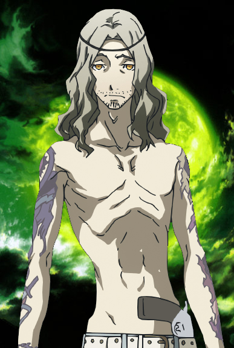Takaya's personality is added during the course of the story. In his first appearance, where he was on a "mission" with his fellow members, he is shown to be cold and indifferent, mocking and pointing at his victim with his gun. When asked by his victim why he is doing this, Takaya says that it is not the victim's concern and even justifies his action by saying that "people hear what they wish to hear and believe what they want to believe."
During his first encounter with SEES, he tells the team that the world is crawling with sin and that there will always be disasters, caused by Shadows or human folly, further reinforcing his negative world view. This, along with his other comments during the game, shows that he is misanthropic. His later multiple attempted murders shows that he has little or no appreciation for the life of others with the exception of Jin and Chidori, although in the end he puts his own life first. This is illustrated when he convinces Jin to stop SEES from advancing while knowing that he is not capable of doing so, also knowing that the Shadows from the lower floors can attack Jin as well.
When confronted by SEES for the final time, Takaya shows a great deal of himself. He simply answers to the questions of the team without any intimidation and also in a very melancholic manner, asking them what they hope to achieve since Nyx is unbeatable. During this conversation, he claims that the future is but an illusion and a soul can be satisfied if it only lives for the moment. He claims that any meaning in life was lost long ago and that humanity actually prays for Nyx's "salvation."
His stereotypical Jesus-like appearance has been the basis of many fan-jokes and fan-comics. It has even garnered him the fan nickname of "Revolver Jesus." His headband may be a reference to Jesus' (supposed) crown of thorns. When defeated in battle, he spreads his arms very wide apart, probably a reference to Jesus' crucifixion.
-Voice of Derek Stephen Prince
Jin Shirato
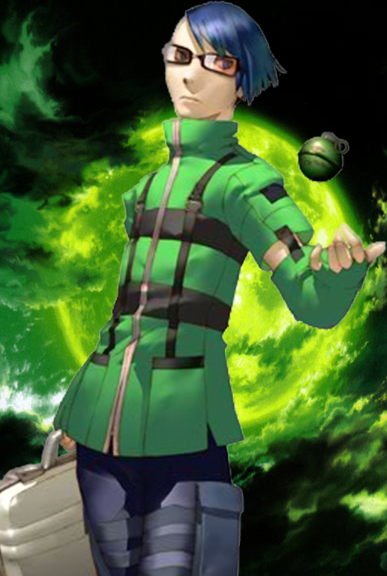Jin is Takaya Sakaki's faithful right-hand man, and a member of Strega alongside Takaya and Chidori Yoshino. Jin acts as his tactical adviser and the webmaster of "Revenge Request". He uses hand grenades and other small bombs in battle, and is also a skilled computer hacker. He is "well-known" on the internet, according to Akihiko Sanada. Fuuka Yamagishi in particular recognizes the name Jin from her time online. In the Japanese version, Jin speaks in Kansai-ben dialect, suggesting that he may originally hail from Osaka or any other city in the Kansai area.
Jin appears very eager to be rid of SEES, since he believes that they are hypocrites who don't appreciate their own power. However, he is rational enough to limit Takaya's actions when necessary. Whenever Takaya takes a reckless approach, Jin is there to hold him back and remind him of what they are truly there for.
Jin is a zealot with strong belief in Takaya's goals. He is fiercely loyal to Takaya for "showing him out of darkness" and helping him through the Kirijo Group's experiments. In spite of this, he often inadvertently helps SEES by revealing important information. It is Jin who informs the Protagonist about the truth behind Strega, their involvement in the coming of Nyx, and Shuji Ikutsuki's real allegiance.
Near the end of the game, on the 258th floor of Tartarus, Jin confronts SEES in battle. After losing, he demands that SEES finish him off. Jin reveals that in order to better understand the Dark Hour, the Kirijo Group rounded up kids on the streets and gave them special powers in order to investigate Tartarus. However, they had to take experimental medication so that their powers wouldn't kill them; only Strega survived out of the original hundred. Everyone is surrounded by Shadows, and Jin orders SEES to flee instead of dragging him away. He kills himself by setting off a grenade that holds back a horde of Shadows in Tartarus.
-Voice of Grant George
Chidori Yoshino
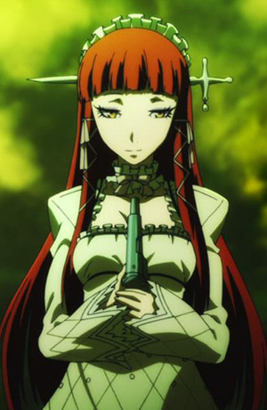A member of Strega with Takaya Sakaki and Jin Shirato, during her free time, she sketches at the Port Island Station. She is one of the Artificial Persona Users once used by the Kirijo Group who require "suppressants" to control their Persona. Because of their dependency on the expensive drugs, Chidori joined Strega in their activity through a "revenge website", where they carry out assassinations and other illegal activities during the Dark Hour. However, their activity is threatened by SEES, a group dedicated to ending the Dark Hour.
It is there during summer vacation that she met one of the SEES members, Junpei Iori. Junpei was intrigued by her presence and hobby. Initially, Chidori brushed him off as a nuisance. Junpei also finds out that she would hurt herself, but the wounds would heal itself miraculously. His next visit caught her interest, when he unknowingly hinted on his activity"in the darkest hour", where he leads the "chosen ones" to "stand against the forces of evil". Chidori knew that he was referring to SEES, and arranged to stop them.
On November 22nd, Chidori faced a great conflict when she had to face Junpei and SEES. When Junpei was badly wounded by Takaya, Chidori pushed away her loyalties with Strega and attempted to heal Junpei using the"Spring of Life", ignoring the fact that she would lose her own life using this skill. Finally, she succumbed to her death, but not before confessing that she loved Junpei. A remorseful Junpei inherited her sketchbook, which was filled with sketches and portraits of himself. This strengthened his resolve to become the man in the sketchbook.
The original storyline of Persona 3 involving Chidori was expanded in "The Journey" of Persona 3 FES, as well as Persona 3 Portable. Meeting certain requirements will enable Chidori to be revived. To revive Chidori, the protagonist must talk to Junpei on the days 11/06, 11/11, 11/14 and 11/22 (the day of her "death") and tell him to go see her every time. After this, Chidori will be revived on 01/21. According to the story, the flowers beside her hospital bed were placed on her corpse as a tribute. The life force she had given to the flowers earlier in the story apparently returned to her, and she was revived, albeit with no memory of the events revolving around her. During the Dark Hour, she was transmogrified, revealing that she had lost her Persona, since Medea has merged with Junpei's Hermes.
-Voice of Mona Marshall
Characters
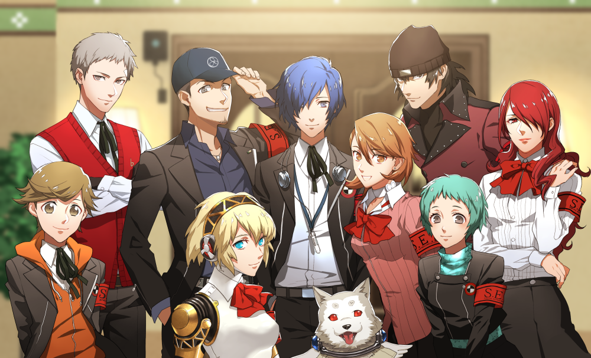SEES \\ Specialized Extracurricular Execution Squad
While the school sponsors them and lists them as a school club, their true purpose is to eliminate the Shadows and investigate both Tartarus and the Dark Hour. Their advisor is Shuji Ikutsuki and Mitsuru Kirijo functions as the club leader. The protagonist or the female protagonist ends up leading the club in many instances due to their unique abilities. Other than Ikutsuki, all the members of SEES are Persona users. Additionally, all the members are students at Gekkoukan, other than Ken Amada and Koromaru. After school, they stay at a Iwatodai Dormitory. SEES is also backed up by the Kirijo Group, as well as certain members of the police such as Kurosawa, providing them access to anti-Shadow technology and weapons.
Male Protagonist
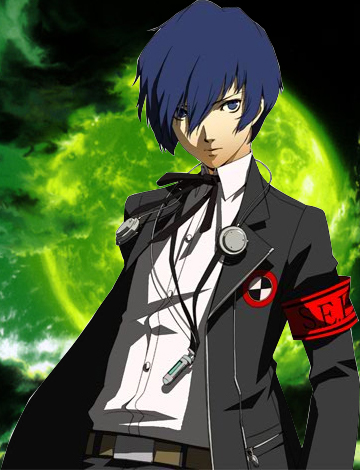In Persona 3, the protagonist is a silent protagonist aside from technically speaking in battle in certain instances. While being a silent protagonist, he is very stoic, reserved and calm, gathered by the fact that he remains unmoved even when guns are pointed at him, as well as walking under a green sky and being surrounded by blood pools and coffins everywhere in the beginning of Persona 3. He appears very introverted, distant and aloof since he only observes the conversations of his party members and only speaks when someone is directed at him for his opinion on the matter. At one point, Yukari Takeba raises her voice at him in frustration, calling him "Mr. Perfect" and saying nothing ever fazes him. She then apologizes for her behavior; he comforts her and she says he "really is one-of-a-kind." His teacher Isako Toriumi comments that he is "kinda quiet, but real mature and intense looking (and hawt)" and that he uses proper grammar and punctuation online. Junpei Iori comments that all he does is wander around and talk to people.
Much of his personality traits are ultimately based on the player's actions and decisions. For example, he can be enthusiastic, upbeat and kind who engages with as many Social Links as he can. Likewise, the player can make him pessimistic, morbid and lonely who barely engages with Social Links. These possible combinations of traits provides a wide range of various interpretations on his characterization. The same goes for any possible romantic interests the player may desire to partner him with. The player can choose from Yukari, Fuuka, Mitsuru, Aigis, Chihiro, Isako (his teacher) Yuko and Elizabeth.
In the manga adaptation, "Minato Arisato", as he is referred to, is shown to be fairly calm and passive, and is characterized as drowsy or tired with a comically large appetite. Much like his other incarnations, he speaks only when addressed, and appears to be on good terms with Junpei Iori and Ryoji Mochizuki.
In the film series, "Makoto Yuki" is depicted as being much darker, ambivalent to the point of apathy. Severely traumatized by witnessing the deaths of his parents as a child to the point of indifference, he has extremely neutral viewpoints on life and death and is uncaring of either. Without a will to live or a will to die, he once told Yukari that he doesn't care if he dies. Because of his unnerving lack of interest and motivation, he often acts only when told to do so and takes on tasks with little, if any sense of self-preservation.
-Voice of Yuri Lowenthal
Female Protagonist
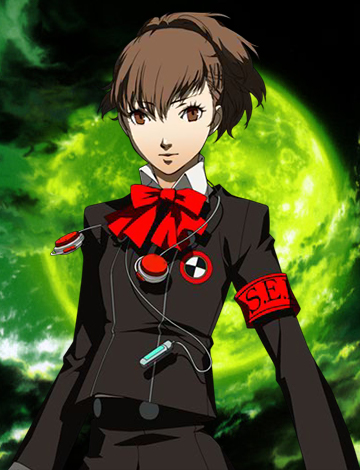The female protagonist is an additional playable protagonist in Persona 3 Portable. Her role is non-canonical in the main Persona series timeline.
She is a silent protagonist, as is the case with most Megami Tensei protagonists, although she does technically speak in battle when summoning a Persona and such.
Unlike the male protagonist or Megami Tensei protagonists in general, she is very bubbly, funny, upbeat, and cheerful. Her dialogue choices exhibit a broad spectrum of emotions, ranging from sarcasm, joking tones, utter seriousness, and otherwise depending on the player's choice. She is a sharp contrast to the male protagonist who is very reserved and concise where she, on the other hand, is not afraid to interject into conversations where her male counterpart would remain silent.
She is also said to be dependable and tough, just like how a leader should be. Although she seems to be always in high spirits, she hides her suffering and burden, which is why everyone, mostly Junpei Iori and Akihiko Sanada, worries so much about her.
She shares the same backstory as her male counterpart. She is an orphan whose parents died on the Moonlight Bridge during a fatal incident a decade prior to the game. She also begins her story when she transfers to Gekkoukan, becomes aware of the Dark Hour, obtains her Persona and becomes a member of the Specialized Extracurricular Execution Squad, or SEES for short.
However, unlike with the male protagonist route, her story can be slightly altered. If she initiates the Moon Social Link with Shinjiro Aragaki and maxes it before the October 4th Full Moon Operation, his death will not occur, and he will instead spend the rest of the game in a coma. During the last days of the female protagonist's route, a student will speak of his discharge from the hospital.
Fans in the west refer to her as "Minako Arisato".
-Voice of Laura Bailey
Shuji Ikutsuki
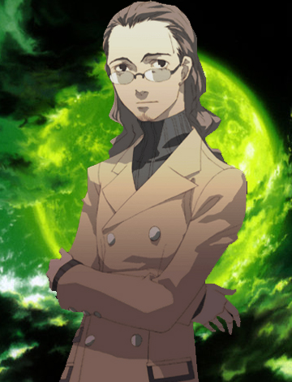Ikutsuki is the Chief Director of the High School and both chairman and adviser of the Specialized Extracurricular Execution Squad, SEES. His proper demeanor and bad puns lead to him being considered lame by most of the students there. He is also the adviser for the special group formed by the game's heroes. He was trained to enter the Dark Hour, although he lacks a Persona so he doesn't directly fight against the Shadows.
In truth, Ikutsuki is working toward a completely opposite end, sharing Mitsuru Kirijo's grandfather Kouetsu Kirijo's dream of The Fall and the coming of Nyx. He was one of the scientists involved in the experiments at Gekkoukan ten years ago, including the creation of Artificial Persona Users.
Ikutsuki manipulates SEES, especially Mitsuru and Akihiko Sanada, as well as Strega to destroy the twelve Arcana Shadows, promising them that once they do so they will eliminate the Dark Hour. But killing the twelve Arcana Shadows actually melds them together, allowing for the re-emergence of the thirteenth Arcana, Death. It is Death's function to summon Nyx and destroy the world.
On November 4th, 2009, after his lies are discovered, on the top of a tower, Ikutsuki reprograms Aigis to sacrifice the members of SEES as offerings for Nyx, and then kills Takeharu Kirijo who had taken advantage of Aigis' inner fight and tried to shoot Ikutsuki himself. When Aigis breaks the programming and frees SEES, Ikutsuki falls to his death from the top of Gekkoukan High School's observational roof (Lower Tartarus) after being wounded in the stomach by a bullet (it is ambiguous if it was an intentional suicide or him forgetting that there's no footing behind him). His mission to revive Death was already complete by the time of his death.
-Voice of Dan Woren
Mitsuru Kirijo
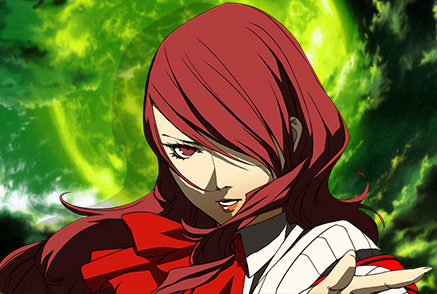Mitsuru Kirijo is the only child of Takeharu Kirijo, the head of the Kirijo Group, and Hanae Kirijo. Although Mitsuru's mother, Hanae, is alive, she is rarely spoken of except in Persona 3 Drama CD: New Moon. Her grandfather, Kouetsu Kirijo, was the former head of the Kirijo Group, and died in an incident. Mitsuru is Gekkoukan High School's valedictorian and student council president, as well as a member of the school fencing club. She is one of the most respected and popular students at the school, as stated by students.
Before the protagonist joins, and even to a degree after he joins, Mitsuru serves as the leader of SEES due to her natural talent for leadership. The protagonist and Mitsuru have a good relationship from the start of the game, her even offering rewards to him for getting high test scores, as she pushes him, and other members of SEES, to excel.
Mitsuru has battled the Shadows longer than any of the other members of SEES, having been trained since a young age to use her Persona. From the start of the game, Mitsuru uses her Persona ability, aided with special devices, to provide battle information and support for the party on the early stages of exploring Tartarus. Even with continued conditioning and self-training, Mitsuru's support range eventually reached its limit, given that her Persona was primarily battle-oriented more than anything else.
After the rescue of Fuuka Yamagishi, and her induction to SEES, Mitsuru returns to the front lines. She uses ice attacks, uses fencing rapiers in combat, has an occasionally frustrating tendency to use Marin Karin or Tentarafoo and is weak against fire.
-Voice of Tara Platt
Akihiko Sanada
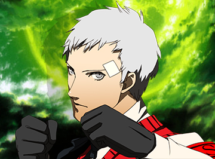Akihiko Sanada is the captain of the Gekkoukan High School boxing team and, along with Mitsuru Kirijo and Shinjiro Aragaki, one of the original members of SEES. He and Shinjiro grew up in an orphanage together with Akihiko's little sister, Miki, who died in a fire that destroyed the orphanage. Devastated by her death and feeling powerless that he could not save her, Akihiko vowed to become stronger. He took up boxing so he could learn how to fight, becoming a champion student boxer in the process.
Shinjiro and Akihiko remained friends after Miki's death. However, an incident occurred during an early SEES mission which put a strain on Akihiko and Shinjiro's relationship. Shinjiro's Persona went berserk while combating a Shadow, killing an innocent bystander (Ken Amada's mother) in the process. Feeling guilty, Shinjiro immediately left SEES. Akihiko used the incident as a springboard to focus even more on his strength and fighting the shadows. He began to criticize his friend for retreating when others needed his help. Throughout the game, Akihiko repeatedly tries to talk Shinjiro into joining SEES again. When Ken Amada joins the party, Akihiko, with the aid of the protagonist, forces Shinjiro to join.
During the events of the Strength and Fortune full moon battles, Akihiko is unsettled and distracted by the absence of Ken and Shinjiro. He later realizes the date: October 4, the day Shinjiro's persona killed Ken's mother. He leaves the others in search of Ken and Shinjiro, finding them both behind Port Island Station along with Strega member Takaya Sakaki, who has interrupted Shinjiro and Ken's conversation and intends to kill them both. He has already shot Shinjiro and was aiming to shoot Ken, but Shinjiro stops Takaya from killing Ken by taking another bullet despite knowing that Ken has made a vow to kill him to avenge his mother's death. Shinjiro's last words are a request that Akihiko take care of Ken, and he states that his death is how things should be.
-Voice of Liam O'Brien
Shinjiro Aragaki
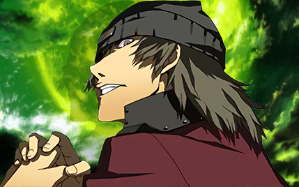Shinjiro is Akihiko Sanada's childhood friend and was an orphan at the same orphanage. He is a senior in Gekkoukan High School, although he doesn't attend class often. Shinjiro was one of the original Persona users who made up SEES, alongside Akihiko and Mitsuru Kirijo. Unfortunately, during one fateful mission two years ago in 2007, his Persona went out of control and accidentally killed an innocent bystander: Ken Amada's mother. Shinjiro forced himself away from the group after the incident. He began skipping school and living as an outcast. He also started doing shady deals with Strega in order to get suppressants that could help control his Persona.
Shinjiro and Akihiko have stayed in touch over the years, but Shinjiro refuses Akihiko's invitations to rejoin SEES until he learns that Ken has decided to join their group. He is fully aware of Ken's vendetta and is ready to take responsibility for his actions. Though he puts on a brave front, the guilt of having killed an innocent woman ate away at him.
Shinjiro's first in-game appearance is early on, when Yukari Takeba, Junpei Iori and the protagonist encounter him at the hospital where Akihiko recovers. He briefly greets the party. He later appears when the same trio decide to investigate a back alley; he saves them from danger by shoving aside petty thugs and urges them to avoid returning to the area.
On October 4th, 2009, Shinjiro meets Ken at the site where Ken's mother was killed, during the October full moon mission. Two years ago, Shinjiro accidentally caused the death of Ken's mother when his Persona went berserk while on a SEES mission. For this reason, Shinjiro distanced himself from SEES and began taking Persona Suppressors, consumed by guilt. Ken only saw him as a murderer, though, and had only ever joined SEES for the sole reason of getting revenge and killing him in return. Shinjiro had no intention of resisting Ken's attempt to enact vengeance, but he warns Ken that if he continues, he could end up just like him. The two are interrupted by Takaya Sakaki while Ken struggles to go through with his plan. Takaya takes a shot at Ken and Shinjiro jumps in front of the bullet, taking his own life. Just before he dies, he tells Ken to make his life matter and tells Akihiko to take care of Ken.
-Voice of Grant George
Yukari Takeba
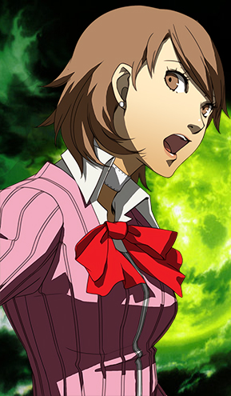Yukari is first seen in the introduction of the game holding an Evoker to her forehead, giving the impression that she is attempting suicide, but she eventually drops it. When the protagonist arrives at the dorm, she meets him in the Dark Hour and almost threatens him when Mitsuru Kirijo calls her off. If the protagonist asks her why she has a gun, she claims it's for self-defense. If he asks her if she knows about a weird kid with a contract, Yukari has no idea. Yukari shows him to his room and wishes him good night.
Yukari hides her true motives from the group, and represses her emotions and her mood swings frequently in the game. From the start, she dislikes Mitsuru, likely due to jealousy of Mitsuru's inhuman superiority and the conflict resulting from their fathers. She's initially unhappy with Fuuka Yamagishi joining the team, largely because she believes that Fuuka had no choice in the matter, but she soon befriends Fuuka, and trusts her enough to ask for her help in investigating Tartarus and the Dark Hour. Despite being hard on her teammates initially, she overall expresses a great deal of concern for all of their wellbeing, which likely plays into her role as a healer. At the start of the game, she has the most trouble summoning her Persona because she is distressed that the use of an Evoker requires one to mimic the act of suicide.
While vacationing at Yakushima, Yukari uncovers her father's role in the Kirijo Group's Shadow experimentation. After discovering this, she feels guilty that her father was involved, and becomes more irritable and distant from the other members of SEES. Learning about her father's supposed involvement in the creation of the Dark Hour and Tartarus causes her to have an emotional breakdown.
The day after Shuji Ikutsuki's betrayal and his failed attempt of trying to sacrifice Yukari on a cross, Fuuka helps Yukari obtain the original unedited video of her father -- the true video her father made of the Incident, not the one Ikutsuki manipulated. In the video, her father apologizes that he won't be coming home, says that he loves her, he was the happiest man on Earth when he was with her and he told her to take care of herself. The video starts to short out, presumably when he dies. A heartbroken Yukari cries and tells her father that she's doing okay and she received his message. Her Persona evolves into Isis.
-Voice of Michelle Ruff
Junpei Iori
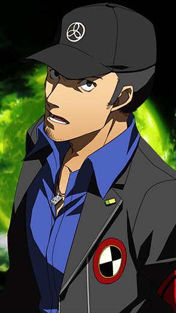Junpei Iori is one of the protagonist's friends. Junpei feels insecure and often hides this with humor and boasting. His insecurities lead to jealousy toward the protagonist. Junpei fights with a two-handed sword, but wields it more like a bat due to his lack of combat training. Like most of the playable characters, Junpei is a student at Gekkoukan High School, and has been in Yukari's class before.
Akihiko Sanada found him during the Dark Hour, crying and disoriented in a convenience store. As soon as Junpei discovers he has the ability to summon a Persona, he joins SEES and moves into the dorm, an action which irritates Yukari Takeba. Junpei is glad to join the team, as it gets him away from his alcoholic father, whom he resents.
Junpei fancies himself as a ladies man and has a somewhat dirty mind. He makes quick and inaccurate assumptions about the protagonist and Yukari's relationship, when she mentions 'last night.' Junpei is usually the first to comment on how attractive the ladies of SEES are. On vacations, he attempts to pick up the local women, usually dragging his guy friends along.
Junpei is eager to fight, because playing hero makes him feel important. He commonly neglects his school work and uses SEES to boost his low-self esteem. Junpei grows jealous of the protagonist, due to his Wild Card ability and position as the field leader of SEES. Junpei acts recklessly, often attempting to prove himself to his teammates. Junpei ends up falling for Chidori Yoshino, a member of Strega, whom he meets by chance at Port Island Station.
Chidori's loyalty to Takaya Sakaki and Junpei's position with SEES ends up conflicting, resulting in Junpei being fatally shot by Takaya. Chidori sacrifices herself and uses her Persona to restore Junpei to life. His Persona, fusing with Chidori's Persona Medea, becomes Trismegistus. Chidori's residual power remains with Junpei, allowing him to regenerate health over time. Junpei becomes more focused due to her death, and decides to be the best man he can be.
-Voice of Vic Mignogna
Fuuka Yamagishi
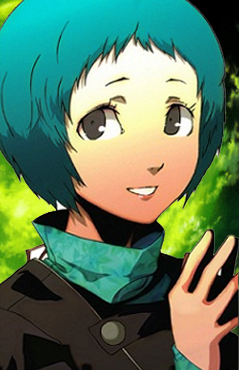Fuuka has short, teal-blue hair and dark brownish-gray eyes (in the cutscene where she first summons Lucia, her eyes are teal green). She is the third shortest member of SEES and is usually seen with her right arm behind her back, holding her left arm.
Initially, Fuuka is a very reserved, shy and timid girl who rarely speaks up. Before she joined SEES, this made her an easy target for school bullies, to the point of Natsuki Moriyama locking her in the school gym, which resulted in her getting trapped in Tartarus. However, she is also a friendly student once others open up to her and very kind-hearted, even more so than Yukari. She is very polite, and almost always uses honorifics when addressing people. Despite being quiet and not being involved with fighting and physical combat, she tries to help her friends in any way possible such as using her Persona's abilities to scan the statistics and weaknesses of Shadows, showing her to be very diligent and dedicated. Her Arcana is the Priestess, which fits with her ability to easily contemplate and analyze things. It also reflects her independence, which is shown by her being able to survive in Tartarus for ten hours by herself, when SEES were barely able to last an hour in there at that point.
Fuuka's new appearance
in Persona 4: Arena
Fuuka loves computers and technology, and can almost always be seen in the dorm on her laptop. She is the type of girl who would rather stay inside connected to her computer and tinkering with electronics, rather than going outside to shop or any outside activities in general for that matter, due to her shyness. While never shown on-screen, Fuuka seems to be an expert hacker, as she manages to hack top-level Kirijo Group archives in order to find out the truth about SEES and Tartarus and can piece back together video files purposefully deleted by third parties, such as the true final message left behind by Yukari's father. The Film Festival reveals that Fuuka is a big fan of hard science fiction i.e. the type of science fiction that could actually happen in the near future, and she says that she's never been a fan of the kind of movies where people travel in time and cast spells.
Fuuka doesn't get along with her parents very well; due most of her family being doctors, both of Fuuka's parents have an inferiority complex and so are really adamant about Fuuka keeping her grades up, ironically causing Fuuka to develop an inferiority complex herself. As a result, she finds living at home to be very difficult and so much prefers to live in the dorm, because there she can be of use to everyone, which is why she didn't feel like Mitsuru dragged her into their battles even though she (and Yukari) worried she might have. However, this desire to be useful sometimes causes her to take enormous responsibility upon herself, such as when she won't allow anyone to search for the Hermit Shadow during the September Full Moon event, insisting that she has to find it herself. While nowhere near as vocal about as Yukari, Fuuka also has a deep resentment towards the Dark Hour and views being conscious during it to be a curse rather than a blessing; when Takaya Sakaki demands that the group acknowledge the "significance" that the Dark Hour has given them, Fuuka states that she doesn't enjoy the group's ordeals one bit
After 2 years, Fuuka returns in Persona 4: Arena with a whole new look (and a new voice actress). She returns with her hair grown longer, but braided to the front, and her outfit consists of a white-colored sundress with sleeves, black tights, and boots,
-Voice of Paula Tiso (Persona 3)| Wendee Lee (P4A Onwards)
Aigis
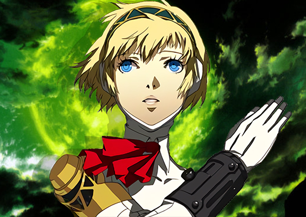Aigis' initial personality is simply a robot designed to obey orders, although she is drawn to the protagonist and states that it is very important for her to be by his side, going so far as to hug them in front of everyone. Her desire to protect the protagonist is so strong, in fact, that she was able to overcome Ikutsuki's programming and free the entire team from their shackles, when Ikutsuki had attempted to sacrifice them to bring forth the Fall. As a result of having no emotions, Aigis' social skills are more-or-less non-existent; it's frequently noted on-screen that while she may look human, she is far from passing as one. She is prone to doing very strange and socially unacceptable things, such as breaking into the protagonist's room to wake him up and requesting to be on standby in their room, which Yukari calls her out for. A video recording shows that she has a habit of breaking into his dorm room at night in order to check on him, even going so far as to keep a record of how long it takes her to pick the lock, In Falling Down, she even goes so far as to sneak into the boy's rooms during the group's stay in Kyoto, claiming it was unfair that she and Makoto weren't in the same room. Lack of social grace notwithstanding, Aigis is nonetheless very polite to everybody, always using the honorific '-san' when addressing them. In the original Japanese version, she ends her sentences with "de arimasu" prior to developing emotions.
-Voice of Karen Strassman
Ken Amada
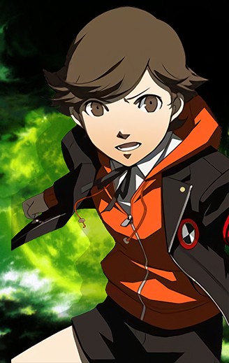Despite his young age, Ken is very intelligent and mature. It is shown that this is a coping mechanism due to the death of his mother at a young age, which more-or-less forced him to give up his childhood. His maturity is noted by Yukari, who can't believe he's in elementary school and claims that Junpei, who is a full six years older than him, could learn a thing or two from him. Fuuka also notes his maturity, and finds him cute as a result of it. Besides being mature, Ken also knows several words that boys his age don't usually know, such as "bastard," which he usually uses when referring to Strega. He is very polite to others, and never misses a chance to show respect where respect is due. He is also honest, diligent, and deeply caring towards his peers, particularly the members of SEES. Ken is shown to like and care a great deal for animals, such as Koromaru. In his video recording, there is a hamster in his room. In Persona 3 The Movie, he cares for a goldfish and in Persona 4 Arena Ultimax, it is shown that he and Koromaru are now living together.
Although Ken is very mature, he still has several qualities that fit with his age and is sometimes too precocious for his own good. He finds a role-model in Akihiko, whom he admires for his boxing and fighting talents, often referring to him as "Sanada-san" as a form of respect to his senpai. He also likes to watch a children's show, Featherman R, but he prefers to keep it a secret. He seems to collect a lot of the Featherman R figurines, as well. He is also shown to be quite naive at times, such as when Junpei tricks him into believing the girls aren't wearing anything under their kimonos, which they wore on New Year's Day. Overall, Ken gives off the impression that he's just trying too hard to be something he's not i.e. an adult. Ken notes that one of the reasons he uses spears in battle is so that he'll be on even ground with an adult.
-Voice of Brianne Siddall (Persona 3) | Cindy Robinson (P4A Onwards)
Koromaru
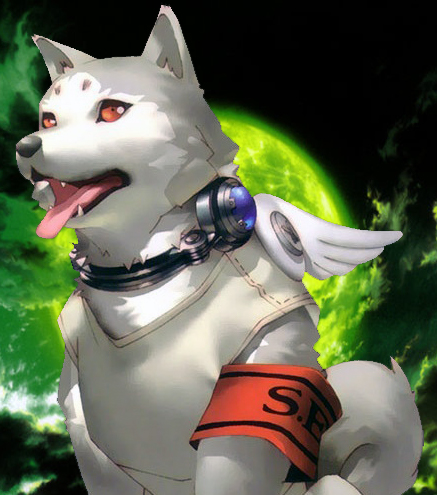Koromaru's personality is based on the famous dog Hachikō. He is kind and has shown extreme loyalty, choosing to stay at his master's shrine long after his death and going for a walk everyday like he used to with his master. He is also very protective of the shrine, as shown when he risked his life to defend it, but got seriously injured in the process. According to Aigis, he considers the shrine a sacred place.
Koromaru also exhibits numerous human characteristics, despite being a dog. He exhibits intelligence far above that of most dogs. He is fiercely loyal, and particularly close with Shinjiro Aragaki, who often feeds him special food and takes extra care of him. He is a fan of a show called "The True Battles of Real Men," which exhibits acts of courage from real people. He begs the protagonist to take him to the theater for a special showing of the final episodes of the show. Koromaru whines and runs around after the movie until the protagonist agrees to purchase the boxed set after its release.
In Persona Q: Shadow of the Labyrinth, even though he gets along with everyone, he dislikes Kanji Tatsumi for some unexplained reason and refuses to let Kanji pet him. Of all (surviving) members of SEES, he seems to be the closest to Ken, judging by his decision to move in with him as shown in Persona 4 Arena Ultimax.